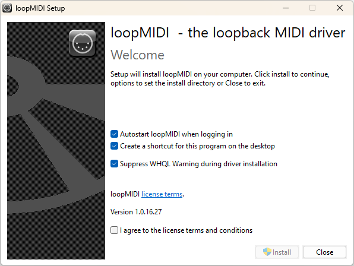
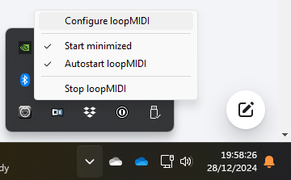
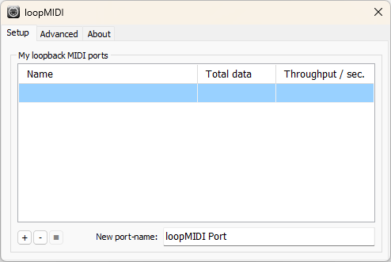
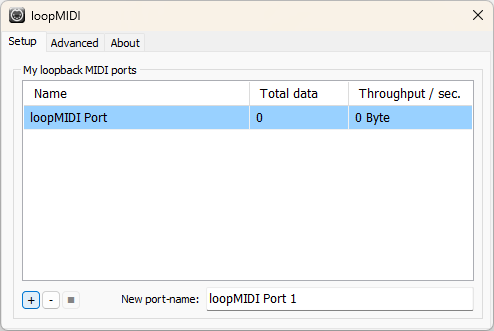

Companion Midi Button Presser

On Windows, you will need to start by setting up a suitable MIDI port that for this program to listen to.
If this program and Proclaim/ProPresenter will be running on the same Windows PC, use loopMIDI to create a MIDI "loopback" port.
If you want program and Proclaim/ProPresenter to run on different computers, you will need to set up network MIDI e.g. using rtpMIDI on Windows, or the MIDI Studio window in MacOS. Configuring this is beyond the scope of this help document.
Download loopMIDI from the author's web site, unzip the downloaded file and run the setup program inside.
Tick the checkbox I agree to the license terms and conditions, and click Install.

Once installation is complete, click Launch.

Look in the Windows notification area for the loopMIDI icon (which looks like a 5-pin MIDI socket), right-click the icon and select Configure loopMIDI.

Name the MIDI port to be created (the default loopMIDI Port is fine in most cases) and click the + button bottom left.

The new MIDI port will be listed in the My loopback MIDI ports section.
